Страницы портала
Макеты страниц
Страницы портала, нарисованные по дизайн-системе и вашим макетам, — так они будут выглядеть в браузере ещё до вёрстки. Кадры в ширинах 1920 и 375. Нажмите на кадр, чтобы открыть его крупно; стрелки листают галерею. Статус каждой страницы — на странице «Ход работ».
01
Главная
Первый экран, условия для оптовых клиентов, категории, ассортиментные решения, сезонные подборки и бренды.
Главная страница
Первый экран, условия для оптовых клиентов, категории, преимущества, ассортиментные решения, сезонные подборки, бренды и промо-блоки. Первый экран — одно изображение во всю ширину полосы, текст и кнопки поверх него; следующий блок накрывает низ изображения. Кадр в ширину монитора 1920 с полосой содержимого 1320 по центру.
{kind=link}
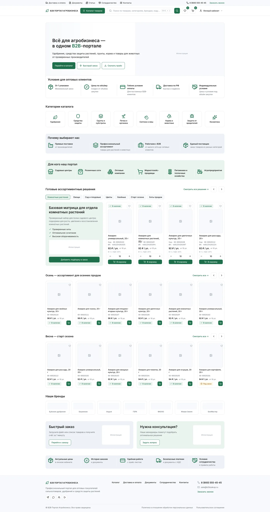
Главная страница, десктоп
Кадр в ширину монитора 1920: содержимое стоит в полосе 1320 по центру, слева и справа остаются поля по 300 пикселей. Первый экран — одно изображение во всю ширину полосы со скруглением: заголовок, подзаголовок и три кнопки лежат поверх его левой части, слева наложена светлая маска, чтобы текст читался на любой картинке. Панель «Условия для оптовых клиентов» приподнята и накрывает низ изображения. Дальше восемь плиток категорий в один ряд, условия и преимущества пунктами с иконкой слева и вертикальными отсечками, готовые ассортиментные решения с подборкой и каруселью, два сезонных ряда по шесть карточек, плитки брендов, два промо-блока на разных подложках, предфутерная полоса и подвал. Серые и светло-зелёные полосы чередуются, чтобы соседние блоки не сливались. Гость видит цены базового опта.
Телефон · 375

Главная страница, телефон
Те же блоки в одну колонку: мобильная шапка, первый экран без изображения — заголовок, подзаголовок и три кнопки на всю ширину, категории по два в ряд, сезонные ряды — горизонтальными карточками с прокруткой, блока брендов нет, промо-блоки без изображений, предфутерная полоса в две колонки, подвал одной колонкой и нижняя панель навигации с корзиной.
02
Каталог
Основной рабочий экран: режимы «Таблица» и «Карточки», панель фильтров, настраиваемые колонки, версия для телефона.
Каталог, режим «Таблица»Новое
Настраиваемые и скрываемые колонки, фильтры в шапке столбцов как в Excel, выбор строк, панель выбранных позиций.
{kind=link}
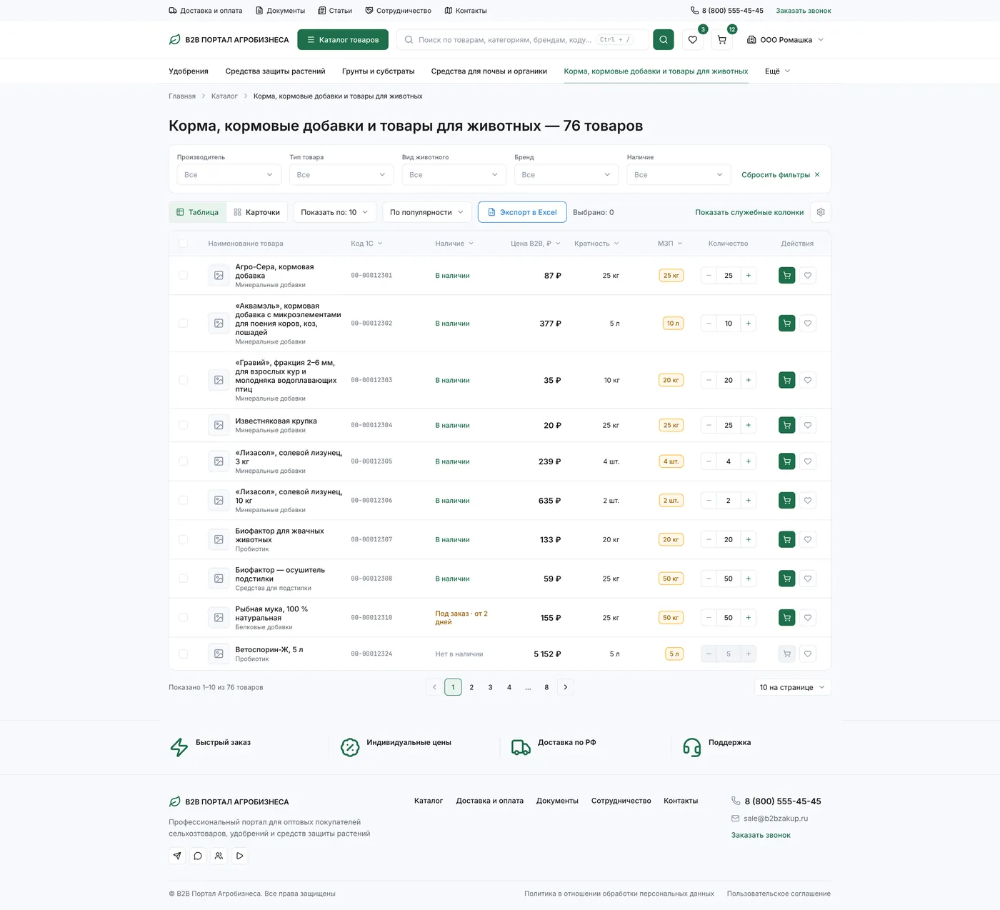
Каталог, режим «Таблица», десктоп
Вся страница для вошедшего клиента: панель из пяти фильтров, панель управления с переключателем вида, количеством на странице, сортировкой и экспортом в Excel, таблица на десять строк: код, вид животного, форма выпуска, производитель, статус наличия, цена с минимальной партией, степпер и кнопки в строке. Служебные колонки — штрихкод, кратность, вес, единица хранения — скрыты, их включает ссылка над таблицей. Внизу пагинация, преимущества и подвал.
{kind=link}
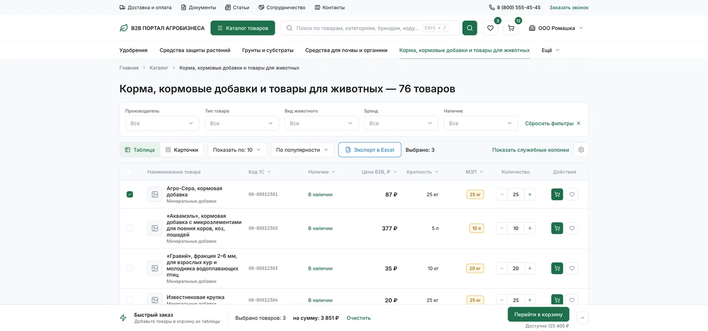
Каталог, таблица: отмечены строки
Первый экран с отмеченными строками: над таблицей счётчик «Выбрано», внизу закреплённая панель быстрого заказа — количество и сумма выбранного, «Очистить», кнопка «Перейти в корзину» и доступный лимит.
{kind=link}
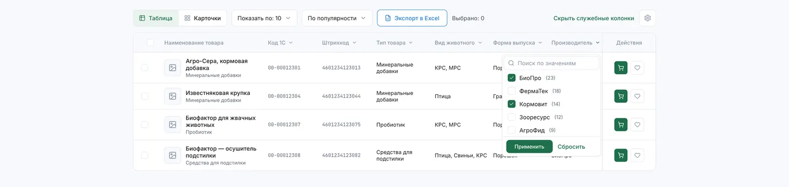
Каталог, таблица: все колонки и фильтр по значениям
Фрагмент с включёнными служебными колонками: таблица шире экрана и прокручивается внутри, колонка действий закреплена справа. Открыт фильтр колонки «Производитель» — как автофильтр Excel: поиск по значениям, флажки со счётчиками, «Применить» и «Сбросить».
Каталог, режим «Карточки»Новое
Плитка товаров, панель фильтров со счётчиками, мини-корзина, пагинация.
{kind=link}
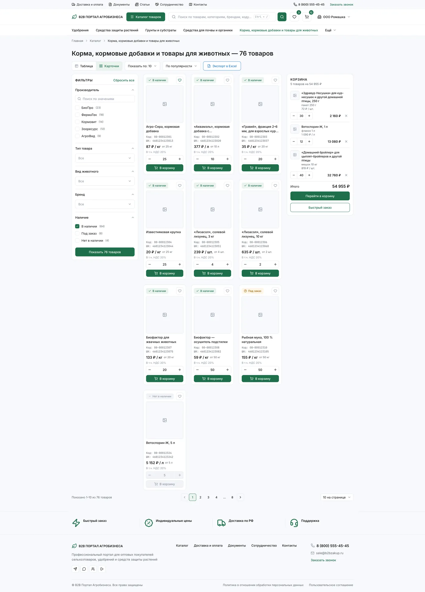
Каталог, режим «Карточки», десктоп
Три колонки: слева фильтры со сворачиваемыми секциями и кнопкой «Показать 76 товаров», по центру плитка карточек по три в ряд, справа мини-корзина с тремя позициями, итогом и кнопками «Перейти в корзину» и «Быстрый заказ». Внизу пагинация, преимущества и подвал.
{kind=link}
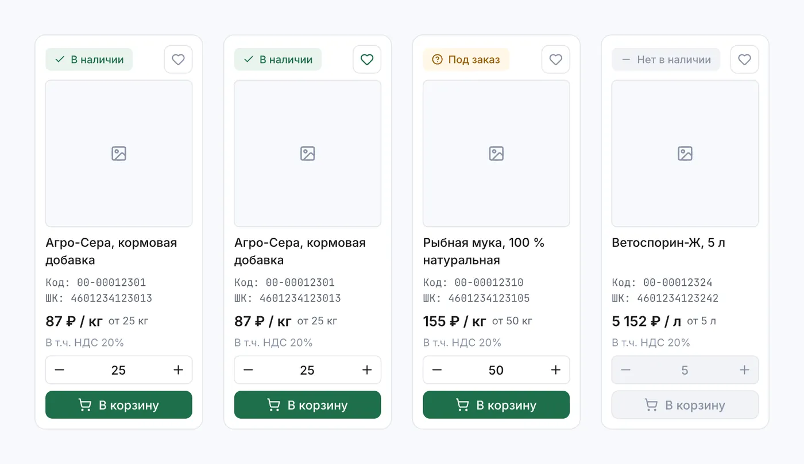
Карточка товара в каталоге: состояния
Четыре состояния одной карточки: обычная, добавленная в избранное, «Под заказ» и «Нет в наличии» — у последней счётчик количества и кнопка «В корзину» неактивны.
Каталог на телефонеНовое
Усечённая таблица и карточки, шторка фильтров, закреплённая корзина.
Телефон · 375
{kind=link}
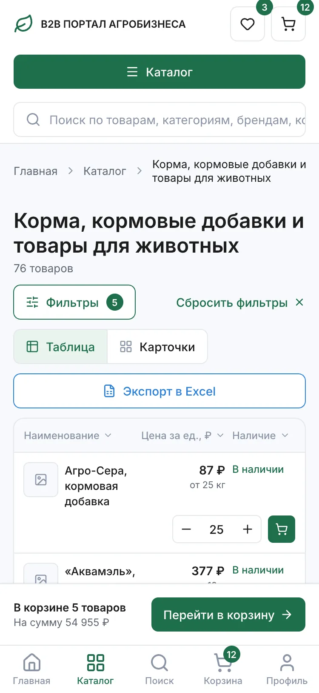
Каталог на телефоне, таблица
Первый экран: мобильная шапка, кнопка «Фильтры» со счётчиком применённых, переключатель вида, «Экспорт в Excel» во всю ширину, таблица из трёх колонок — наименование, цена за единицу, наличие — со степпером и кнопкой «В корзину» в каждой строке. Внизу закреплённая панель корзины и нижняя навигация.
{kind=link}
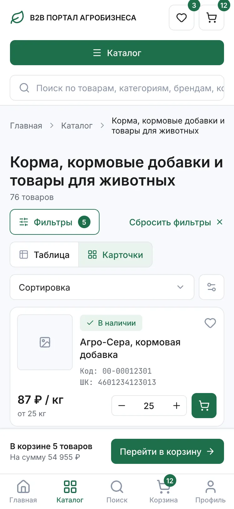
Каталог на телефоне, карточки
Тот же экран в режиме карточек: горизонтальные карточки по одной в ряд — фото слева, статус, название, коды, цена с минимальной партией, степпер и кнопка «В корзину». Над списком сортировка и настройки отображения.
{kind=link}
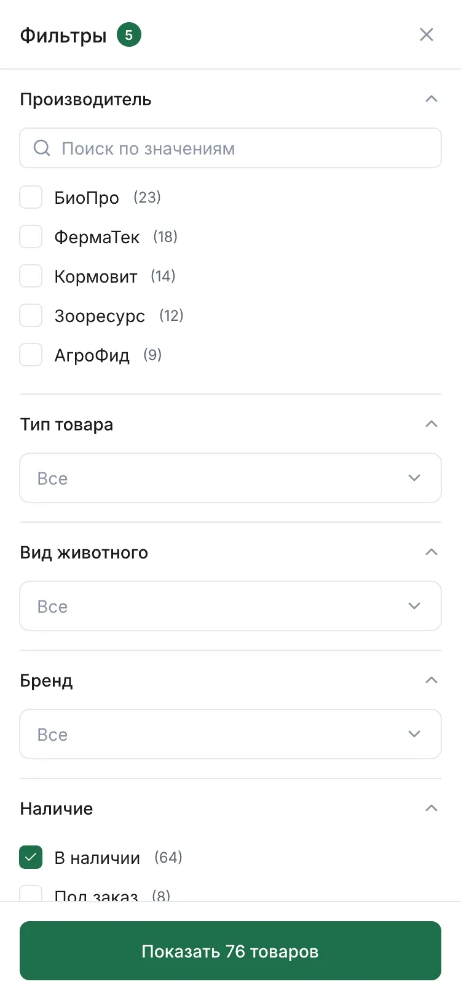
Каталог на телефоне, фильтры
Фильтры открываются во весь экран: производитель с поиском по значениям и флажками, тип товара, вид животного и бренд списками, наличие флажками; внизу кнопка «Показать 76 товаров».
03
Поиск
Живые подсказки под строкой поиска, страница результатов в двух режимах и состояние «Ничего не найдено».
Подсказки в строке поискаНовое
Живая выдача под строкой: мини-карточка товара, кнопка «В корзину», подсветка совпадений.
{kind=link}
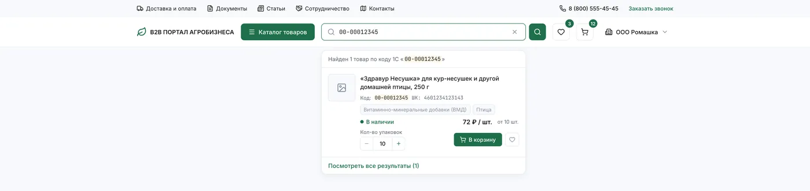
Подсказки в строке поиска
Что видит покупатель, когда вводит код 1С в строку поиска: под полем разворачивается панель с найденным товаром — фото, название, код и штрихкод с подсветкой совпадения, наличие, цена и количество упаковок. Добавить в корзину можно прямо отсюда, не открывая карточку.
Результаты поискаНовое
Страница выдачи в двух режимах — таблицей и карточками.
{kind=link}
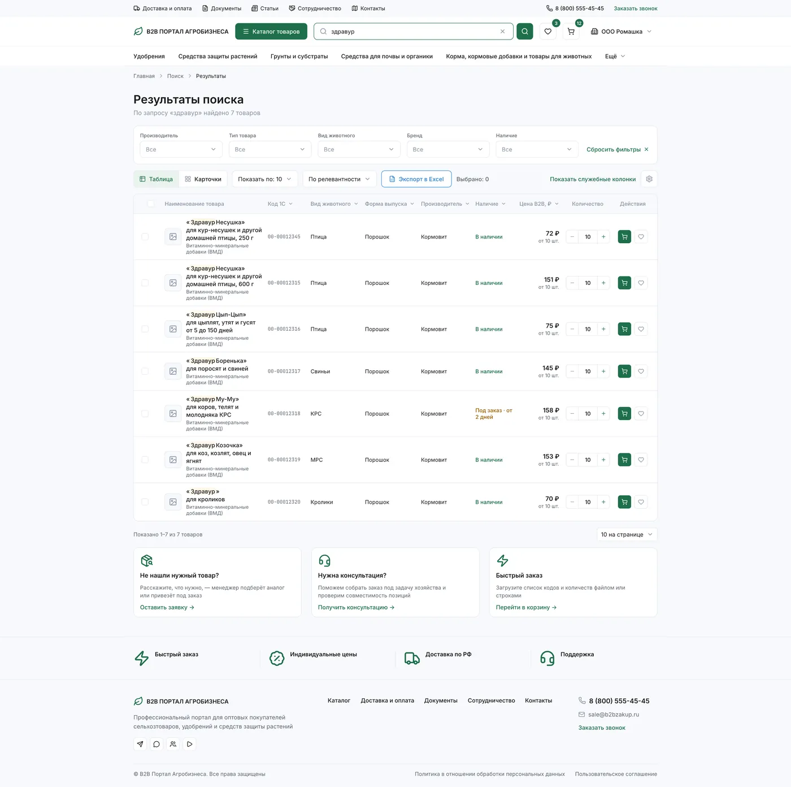
Результаты поиска, режим «Таблица»
Выдача по запросу на том же рабочем экране, что и каталог: фильтры, сортировка по релевантности, экспорт в Excel. В названиях подсвечен совпавший фрагмент запроса. Под выдачей — три подсказки на случай, если нужный товар не нашёлся: оставить заявку, получить консультацию, собрать заказ списком.
{kind=link}
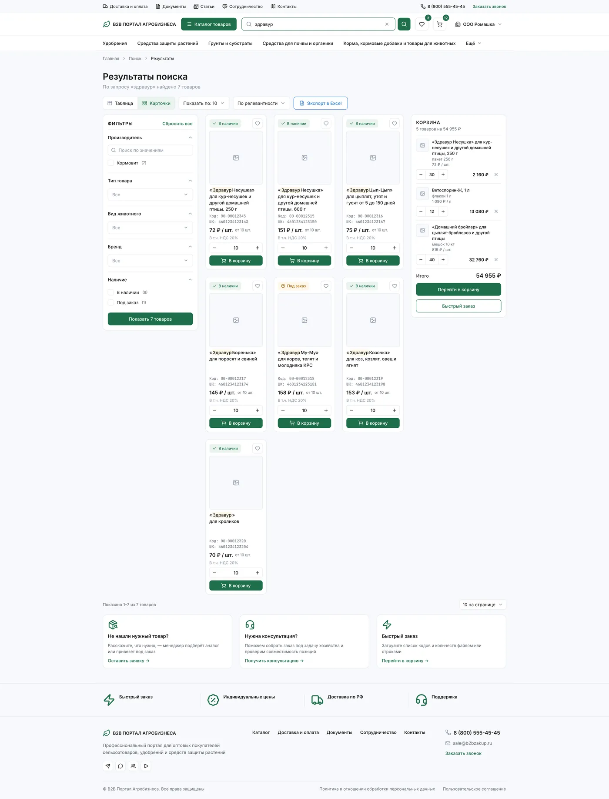
Результаты поиска, режим «Карточки»
Та же выдача карточками: слева фильтры со счётчиками по найденному, справа мини-корзина с текущим заказом. У каждой карточки — код, штрихкод, цена за единицу, минимальная партия и кнопка добавления.
Ничего не найденоНовое
Что предложить покупателю, когда совпадений нет.
{kind=link}
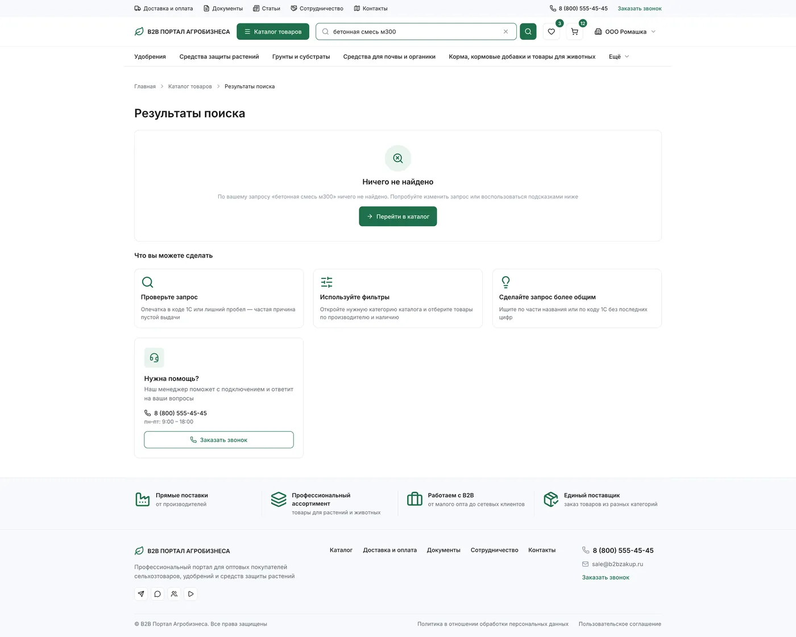
Ничего не найдено
Когда по запросу ничего нет: объяснение и кнопка в каталог, ниже три подсказки — проверить запрос, воспользоваться фильтрами, сделать запрос более общим — и блок помощи менеджера.
04
Карточка товара
Галерея, код 1С и штрихкод, выбор фасовки, блок покупки с уровнями цен и пять вкладок с подробностями.
Карточка товараНовое
Галерея, теги-ссылки, код 1С и штрихкод с копированием, выбор фасовки, блок покупки с уровнями цен, статус наличия.
{kind=link}
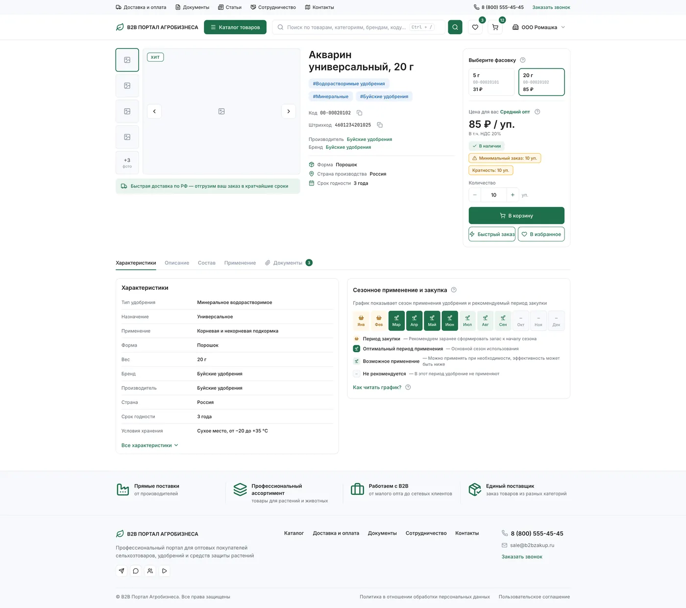
Карточка товара, десктоп
Вся страница товара «Акварин универсальный, 20 г» для вошедшего клиента. Слева галерея: лента из пяти миниатюр и большое фото со стрелками и наклейкой «ХИТ», под ним плашка о быстрой доставке. В центре название, кликабельные теги-ссылки на разделы каталога вместо привычных хлебных крошек, код и штрихкод с кнопкой копирования, производитель и бренд ссылками, ряд фактов о товаре. Справа блок покупки: выбор фасовки плитками, цена вашего уровня с пояснением, наличие, минимальный заказ и кратность, количество и кнопки. Ниже пять вкладок: открыты характеристики таблицей и график сезонного применения по месяцам.
Телефон · 375
{kind=link}
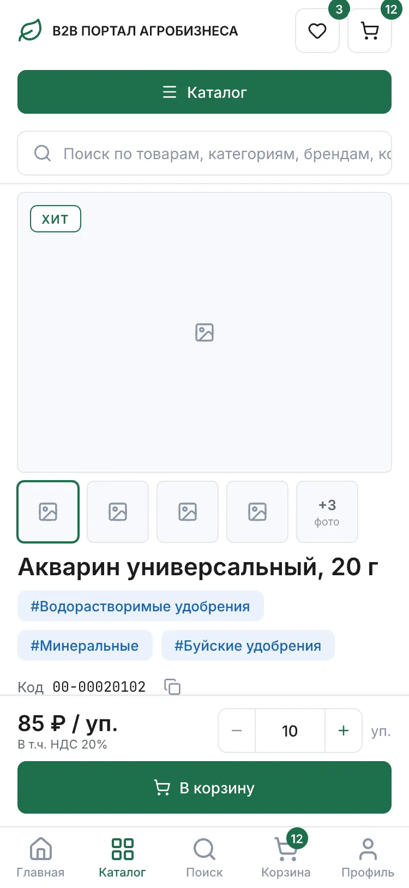
Карточка товара, телефон
Первый экран на телефоне: галерея одной колонкой, название, теги и коды. Блок покупки прилипает к низу экрана над нижней панелью навигации — цена, количество и «В корзину» всегда под рукой, сколько бы вы ни прокручивали страницу.
{kind=link}
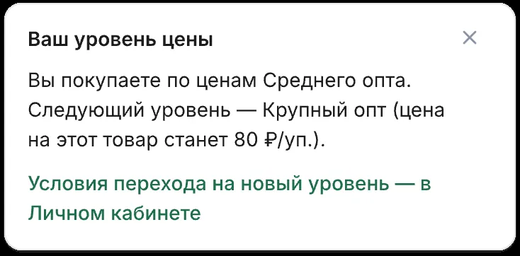
Подсказка об уровне цены
Всплывающее окно по знаку вопроса рядом с уровнем цены: по каким ценам вы покупаете сейчас, какой уровень следующий и сколько будет стоить этот товар на нём.
Вкладки карточки товараНовое
«Характеристики» с графиком сезонности, «Описание», «Состав», «Применение», «Документы».
{kind=link}
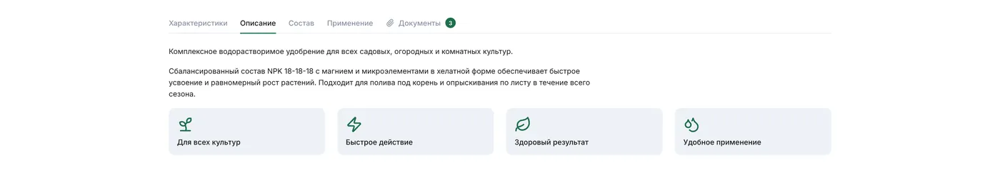
Вкладка «Описание»
Текст о товаре двумя абзацами и четыре коротких преимущества плитками с иконками.
{kind=link}
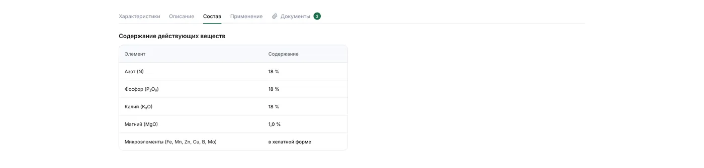
Вкладка «Состав»
Содержание действующих веществ таблицей: элемент и его доля. Химические формулы с нижними индексами.
{kind=link}
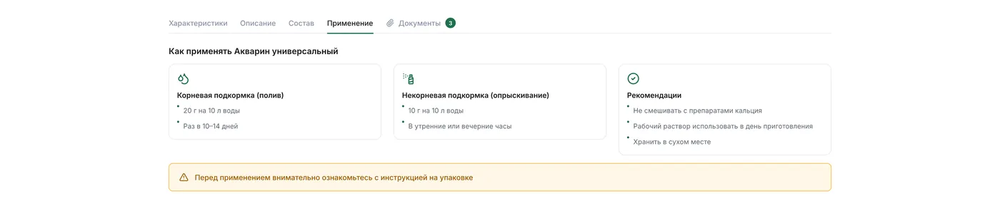
Вкладка «Применение»
Как применять товар: корневая подкормка, некорневая подкормка и рекомендации тремя колонками, внизу жёлтая плашка с предупреждением ознакомиться с инструкцией на упаковке.
{kind=link}
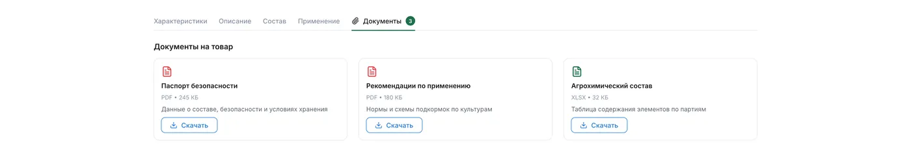
Вкладка «Документы»
Документы на товар карточками: иконка формата, название, размер файла, пояснение и кнопка «Скачать» у каждого.
Телефон · 375
{kind=link}
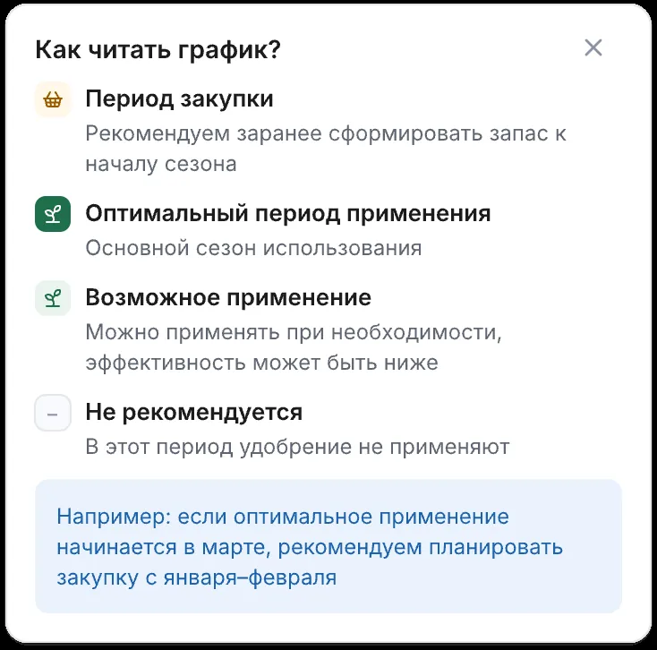
Подсказка «Как читать график?»
Расшифровка четырёх состояний графика сезонности и пример: если применять начинают в марте, закупаться стоит с января–февраля.
05
Корзина и заказ
Корзина с оформлением на одной странице, способы получения, пустая корзина и экран «Заказ принят».
Корзина и оформлениеНовое
Одна страница: массовые операции, смена фасовки в строке, контроль кратности, способ получения, панель «Ваш заказ».
{kind=link}
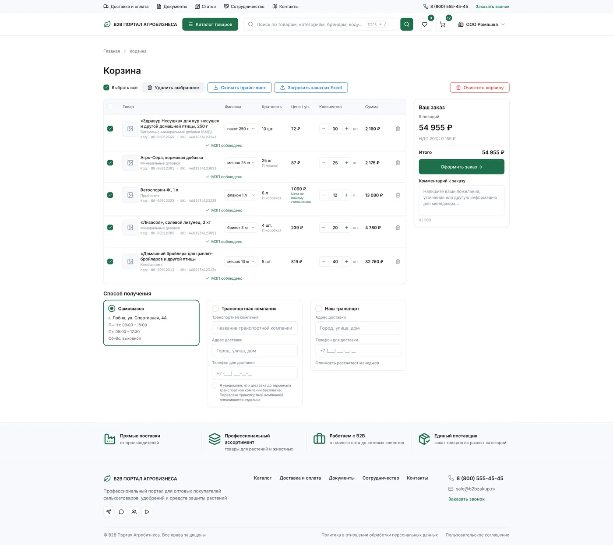
Корзина и оформление, десктоп
Корзина и оформление на одной странице, без отдельного шага оформления. Над таблицей — выбор всех позиций, удаление выбранного, выгрузка прайса, загрузка заказа из Excel и очистка корзины. В таблице у каждой позиции фото, название, тип, код и штрихкод, фасовка — меняется прямо в строке, кратность, цена, количество и сумма; под строкой отметка, что минимальная партия соблюдена. Ниже три способа получения: самовывоз, транспортная компания и наш транспорт. Справа панель заказа с суммой, НДС, комментарием и кнопкой оформления.
{kind=link}
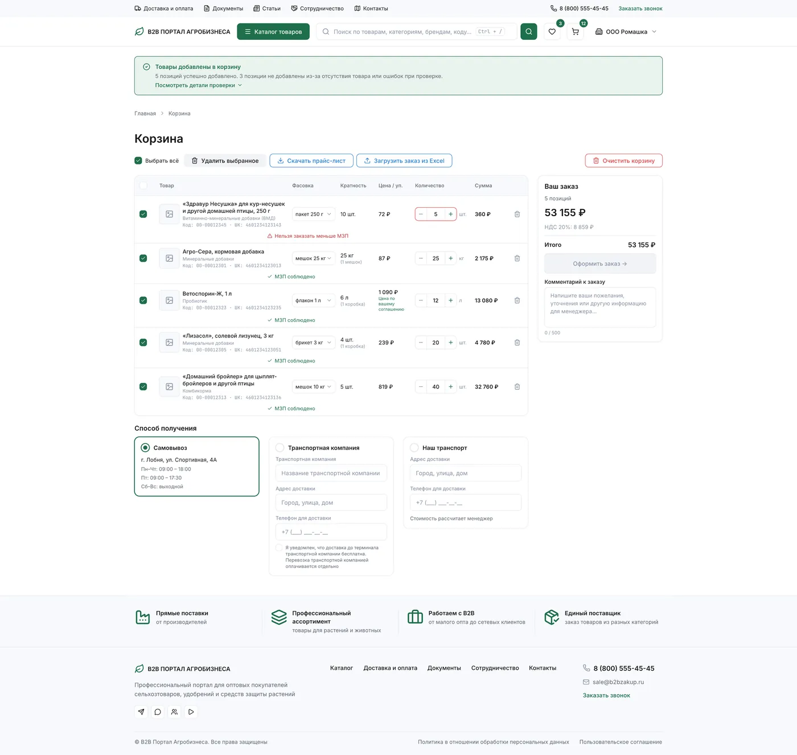
Корзина после быстрого заказа
Та же корзина сразу после загрузки списка файлом: сверху зелёный баннер о том, сколько позиций добавилось, а сколько нет. У первой строки количество меньше минимальной партии — красное предупреждение, красная рамка у количества, кнопка оформления недоступна, пока ошибку не исправят.
Телефон · 375
{kind=link}
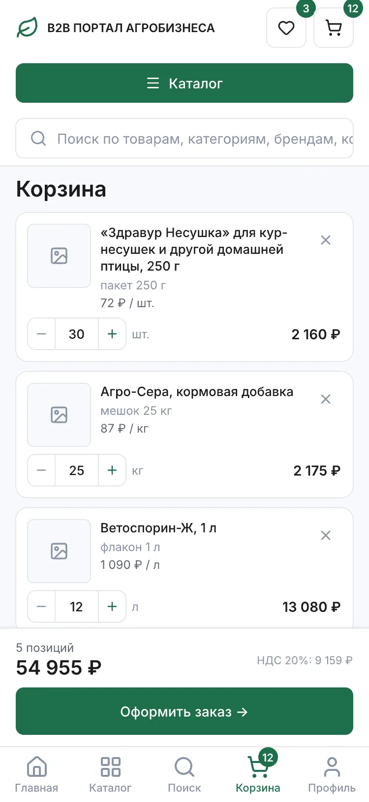
Корзина на телефоне
Первый экран корзины на телефоне: позиции разворачиваются в карточки — фото, название, фасовка, цена, количество и сумма. Панель заказа с итогом и кнопкой оформления прилипает к низу над нижней панелью навигации.
Пустая корзинаНовое
Два действия вместо тупика: перейти в каталог или загрузить список.
{kind=link}
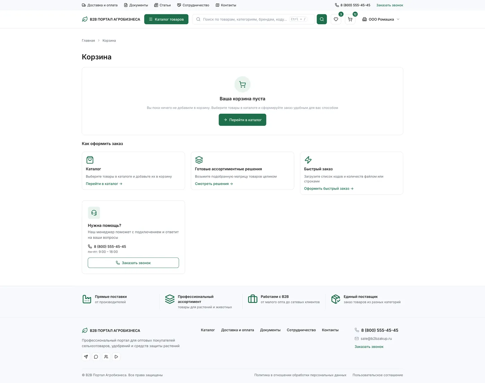
Пустая корзина
Корзина, в которую ещё ничего не добавили: понятное объяснение и кнопка в каталог. Ниже три способа собрать заказ — каталог, готовые ассортиментные решения и быстрый заказ, и блок помощи менеджера.
Заказ принятНовое
Номер заказа, состав и понятные шаги «Что дальше».
{kind=link}
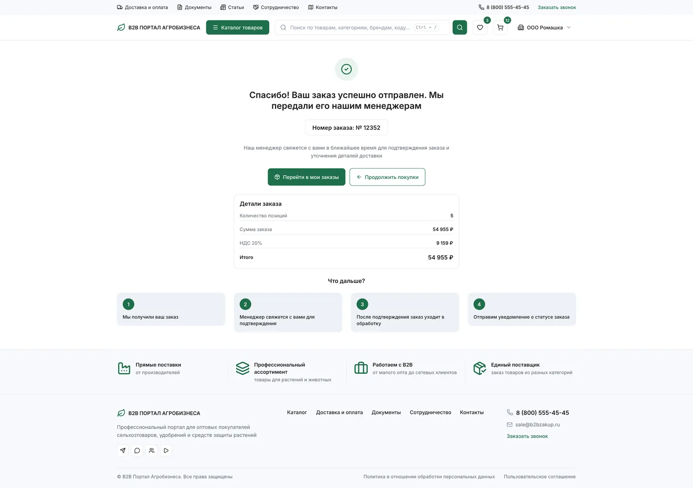
Заказ принят
Экран после отправки заказа: зелёная галочка, номер заказа в рамке, что будет дальше. Кнопки «Перейти в мои заказы» и «Продолжить покупки», карточка с деталями заказа и полоса из четырёх шагов обработки.
06
Быстрый заказ
Загрузка файла со списком или ввод кодов вручную, отчёт проверки со статусами строк.
Вставить списокНовое
Ввод кодов и количеств прямо в поле, без файла.
{kind=link}
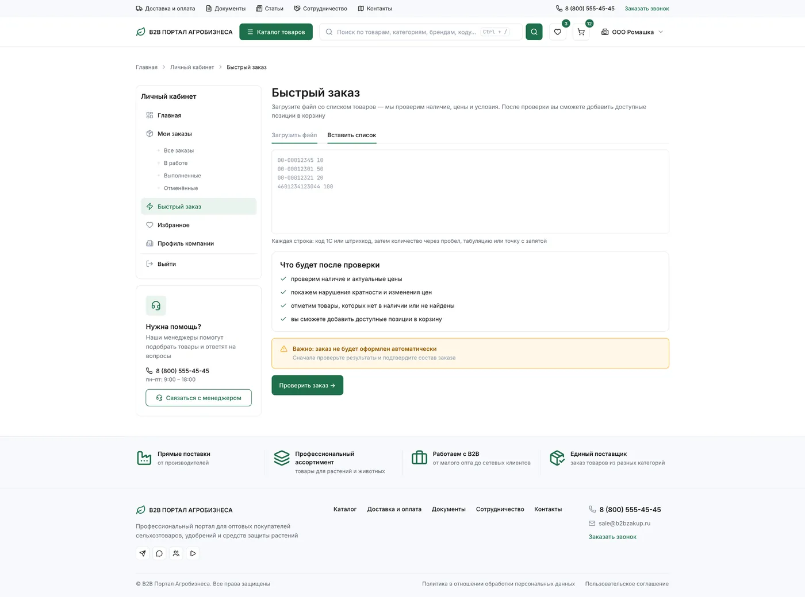
Быстрый заказ, вставка списка
Вторая вкладка того же экрана: поле, куда вставляют строки «код и количество», с подсказкой о допустимых разделителях. Остальное — как на первой вкладке.
Отчёт проверкиНовое
Статусы строк: добавлено, нарушена кратность, изменилась цена, нет остатка, не найдено — с действиями по каждой.
{kind=link}
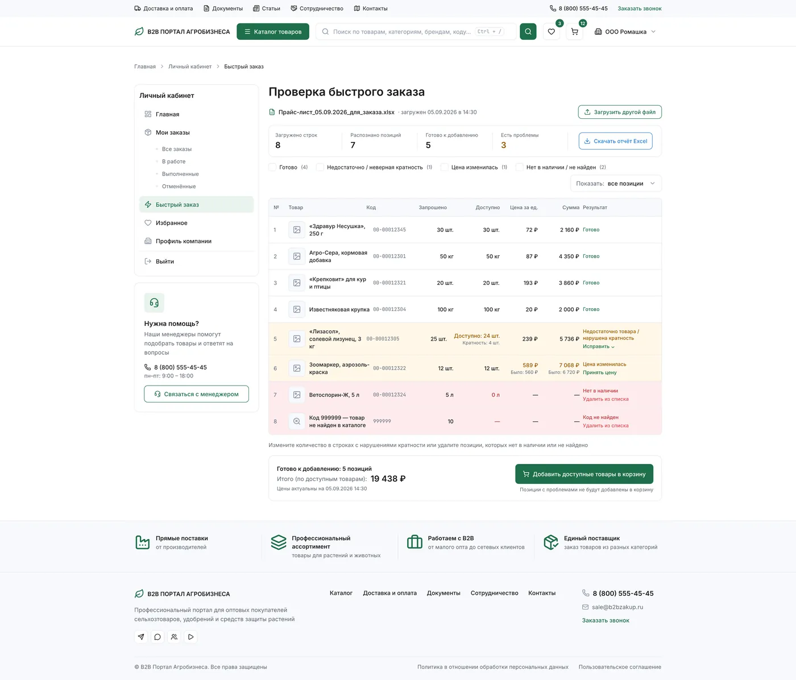
Проверка быстрого заказа
Отчёт по загруженному файлу: сводка — сколько строк загружено, сколько позиций распознано, что готово к добавлению и где проблемы, рядом выгрузка отчёта в Excel. В таблице по каждой строке видно запрошенное и доступное количество, цену, сумму и результат: готово, не хватает количества или нарушена кратность, изменилась цена, нет в наличии, код не найден. Строки с проблемами подсвечены, у каждой своё действие. Внизу итог по доступным товарам и кнопка добавления в корзину.
07
Вход и регистрация
Подключение компании с проверкой по ИНН, вход и полный цикл восстановления пароля.
Подключение к порталуНовое
Заявка с автозаполнением по ИНН и двумя раздельными согласиями.
{kind=link}
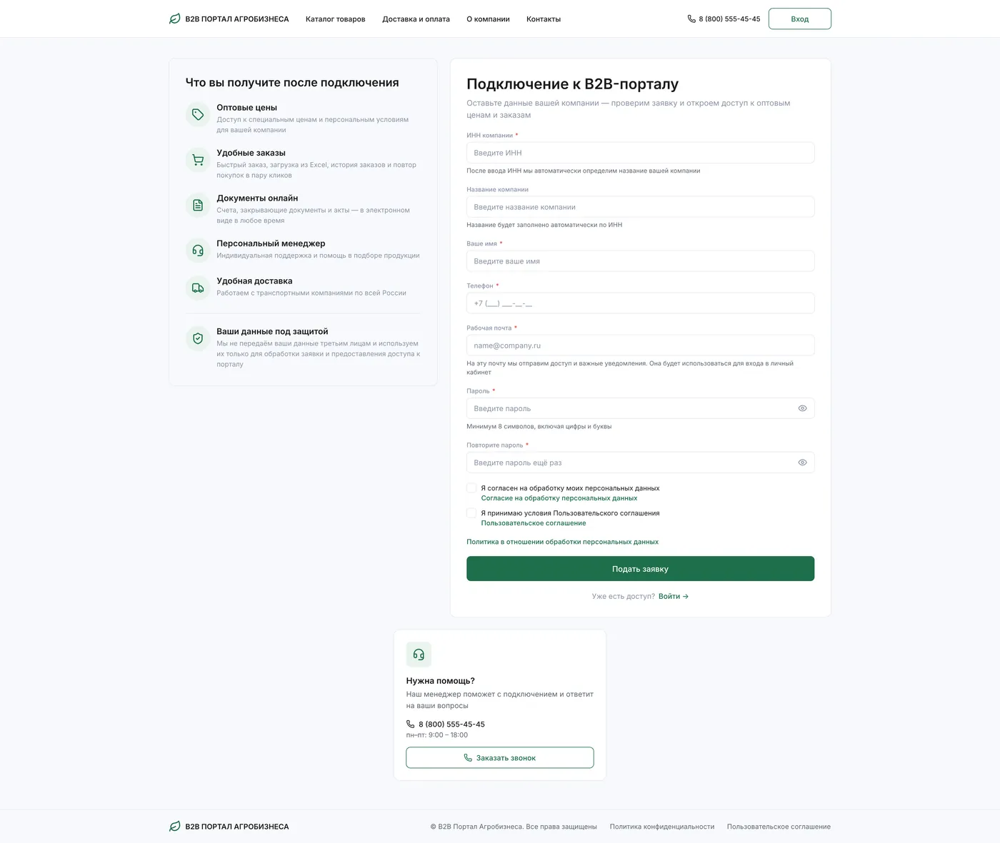
Подключение к порталу
Заявка на доступ: ИНН, по которому подтягивается название компании, контакты и пароль, два отдельных согласия со ссылками на документы и отдельная ссылка на политику. Слева — что компания получает после подключения и как защищены её данные.
Заявка отправленаНовое
Экран ожидания проверки менеджером.
{kind=link}
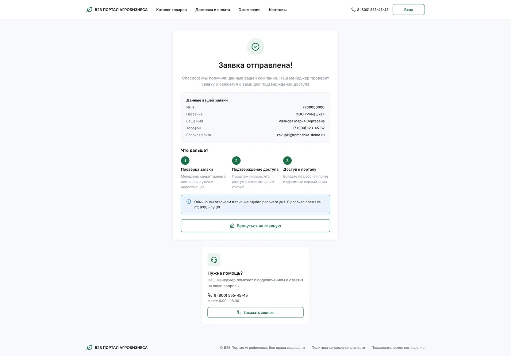
Заявка отправлена
Экран после отправки заявки: какие данные мы получили, три шага до открытия доступа и срок ответа менеджера. Этот же экран видит клиент, который пытается войти, пока заявка на проверке.
ВходНовое
Двухколоночная страница с облегчённой шапкой.
{kind=link}
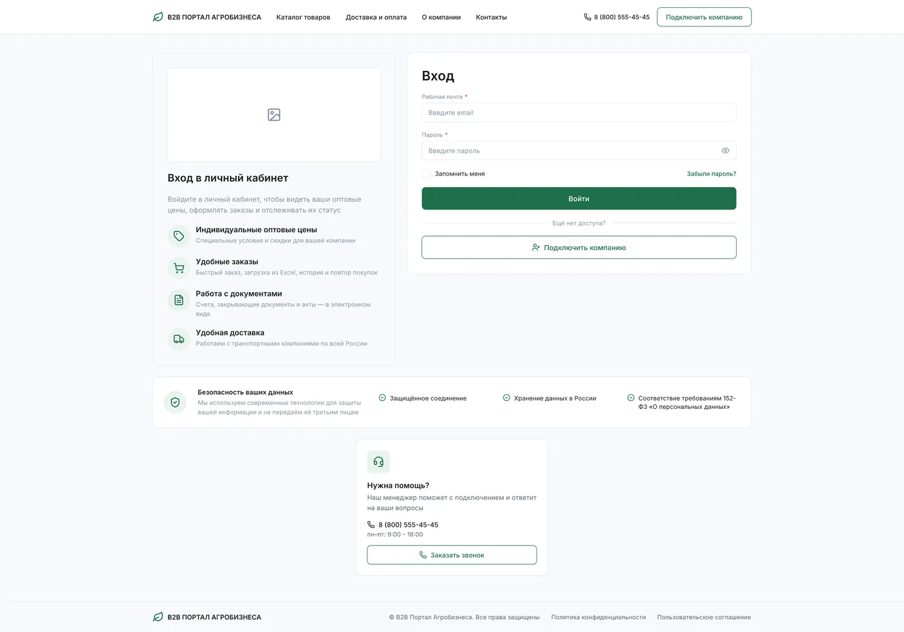
Вход в личный кабинет
Вход по рабочей почте и паролю: «Запомнить меня», ссылка на восстановление и отдельная кнопка для тех, у кого доступа ещё нет. Под формой — как защищены данные компании.
Восстановление пароляНовое
Запрос ссылки на почту.
{kind=link}
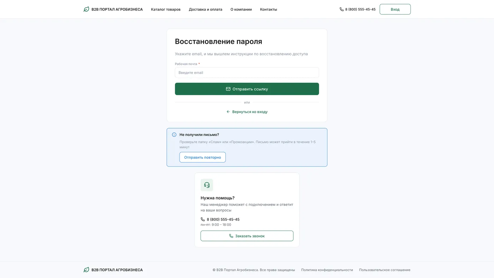
Восстановление пароля
Запрос ссылки на восстановление: поле почты, кнопка отправки и возврат ко входу. Под формой — что делать, если письмо не пришло, с кнопкой повторной отправки.
Новый парольНовое
Ввод и подтверждение нового пароля.
{kind=link}
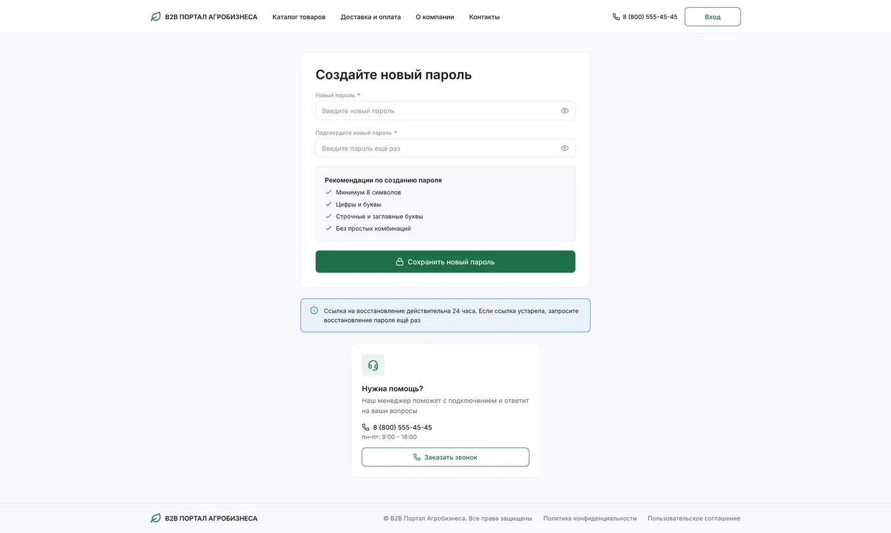
Новый пароль
Экран по ссылке из письма: два поля нового пароля с показом символов, рекомендации по надёжности и срок действия ссылки — сутки.
Пароль изменёнНовое
Подтверждение смены и переход ко входу.
{kind=link}
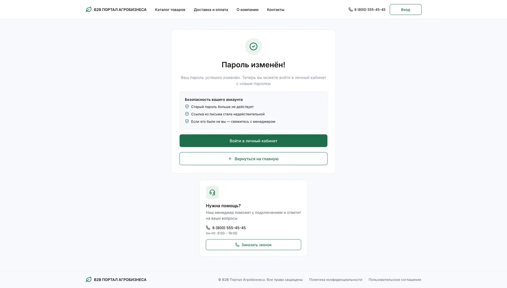
Пароль изменён
Подтверждение смены пароля: что изменилось для безопасности аккаунта, кнопка входа в кабинет и возврат на главную.
08
Личный кабинет
Главная кабинета, заказы со списком и детализацией, избранное, профиль компании и быстрый заказ.
Главная кабинетаНовое
Компания, текущий уровень цен и остаток до следующего, быстрые действия, последние заказы.
{kind=link}
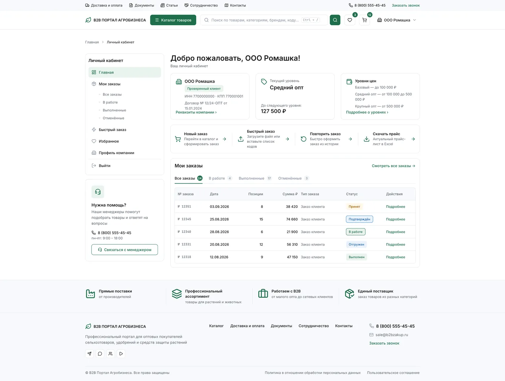
Личный кабинет, главная
Дашборд вошедшего клиента: слева меню кабинета с группами заказов и блоком помощи, справа приветствие, три карточки — компания с отметкой «Проверенный клиент», текущий уровень цен с остатком до следующего и сами уровни с порогами. Ниже четыре быстрых действия одной полосой и виджет «Мои заказы»: вкладки со счётчиками и пять последних заказов со статусами.
Телефон · 375
{kind=link}
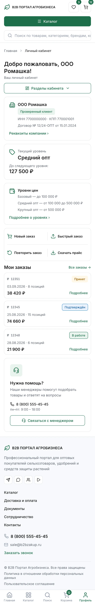
Личный кабинет на телефоне
Та же страница в одну колонку: вместо бокового меню кнопка «Разделы кабинета», карточки идут друг под другом, быстрые действия по два в ряд, заказы — карточками с номером, статусом, датой, количеством позиций и суммой. Внизу подвал и нижняя навигация с активным профилем.
Мои заказыНовое
Список с поиском по номеру, вкладками статусов и выбором периода.
{kind=link}
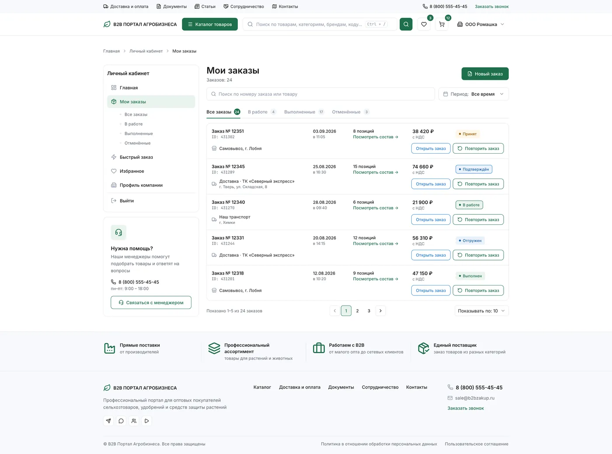
Мои заказы
Список заказов: поиск по номеру или товару, выбор периода, вкладки «Все заказы», «В работе», «Выполненные», «Отменённые» со счётчиками. Каждый заказ — карточка: номер и идентификатор из 1С, дата и время, число позиций со ссылкой на состав, сумма с НДС, статус, способ доставки с адресом и кнопки «Открыть заказ» и «Повторить заказ». Внизу пагинация.
Детализация заказаНовое
Вкладки «Сравнение», «Исходный» и «Итоговый» с подсветкой расхождений.
{kind=link}
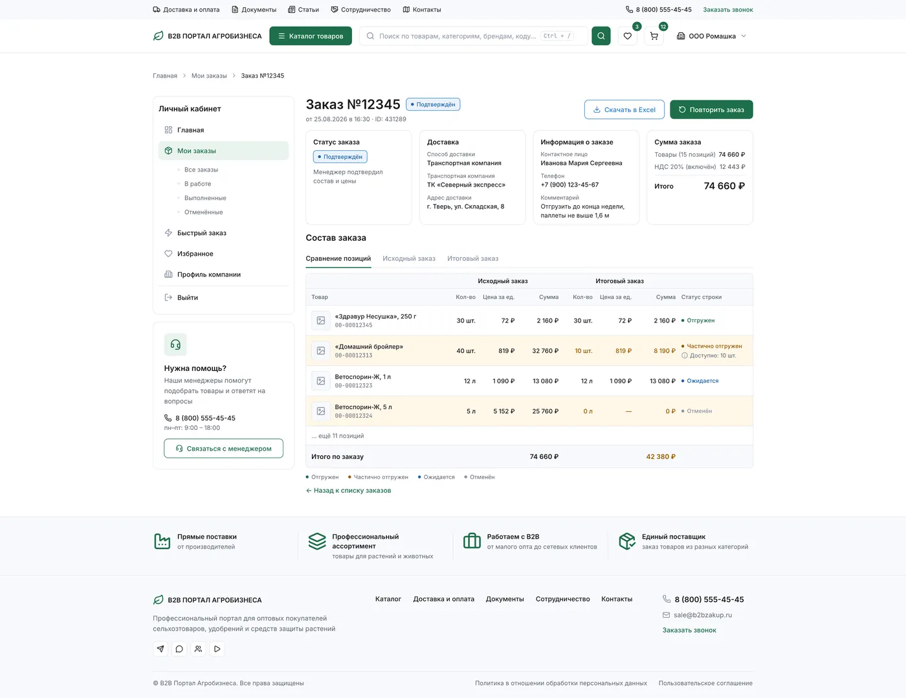
Детализация заказа
Один заказ целиком: статус, доставка, контактное лицо с комментарием и сумма с НДС четырьмя карточками; ниже состав тремя вкладками, по умолчанию «Сравнение позиций» — что клиент заказал и что подтвердил менеджер, рядом. Расхождения подсвечены, у каждой строки статус: отгружен, частично отгружен, ожидается, отменён. В итоге видны обе суммы — исходная и итоговая.
ИзбранноеНовое
Тот же табличный вид, что и в каталоге, плюс пустое состояние.
{kind=link}
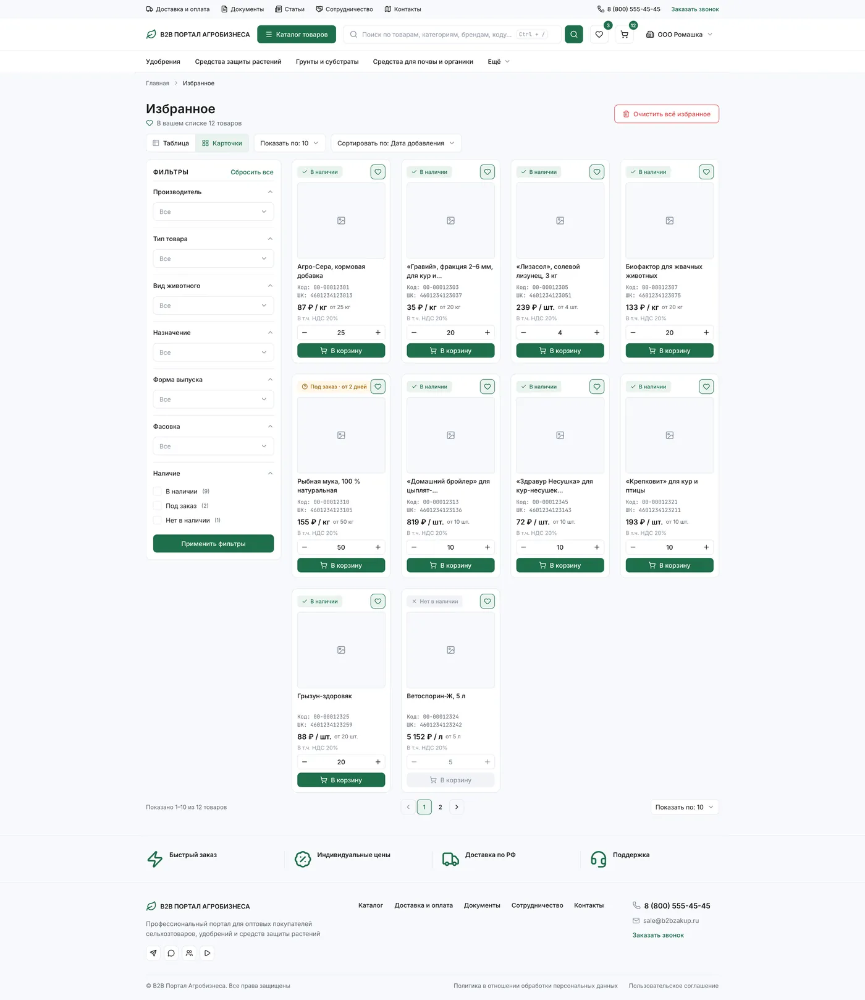
Избранное
Отложенные товары шаблоном каталога: счётчик списка, кнопка очистки, переключатель вида и сортировка по дате добавления. Слева фильтры — производитель, тип товара, вид животного, назначение, форма выпуска, фасовка и наличие; справа карточки по четыре в ряд с закрашенным сердцем, ценой для клиента и минимальной партией. У товара без остатка кнопка «В корзину» неактивна.
{kind=link}
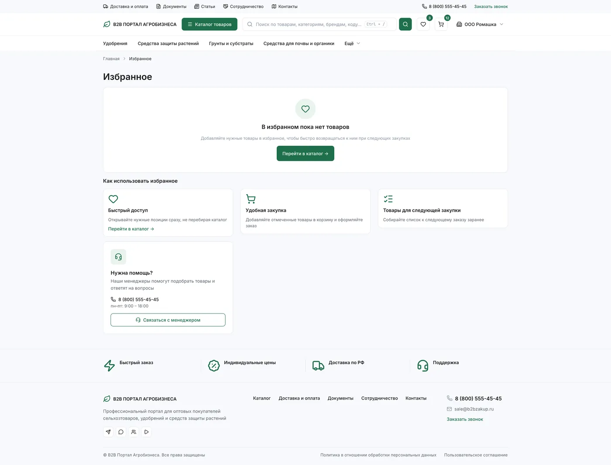
Избранное пусто
Состояние без товаров: объяснение, зачем нужен список, кнопка перехода в каталог, три карточки о том, как пользоваться избранным, и блок помощи менеджера.
Профиль компанииНовое
Реквизиты на чтение, редактируется контактное лицо.
{kind=link}
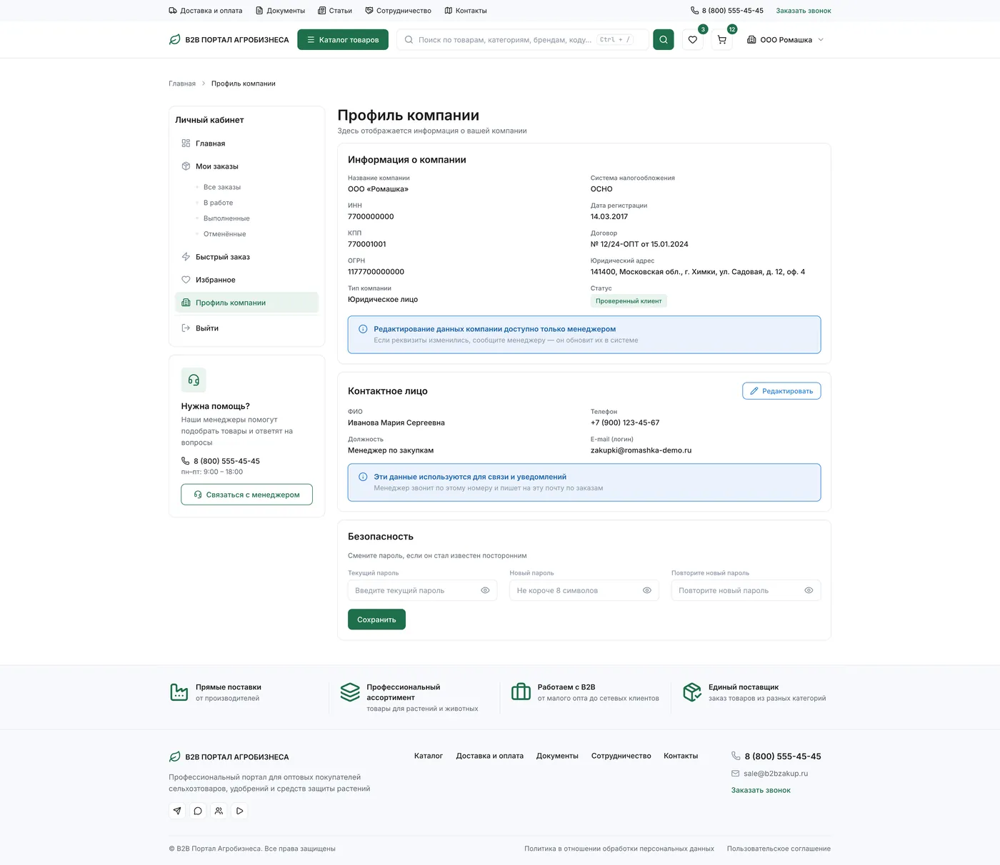
Профиль компании
Три карточки: реквизиты компании только для чтения с пометкой, что их меняет менеджер; контактное лицо с кнопкой редактирования и пояснением, зачем нужны эти данные; смена пароля с тремя полями и кнопкой сохранения.
Быстрый заказ в кабинетеНовое
Загрузка файла со списком прямо из кабинета.
{kind=link}
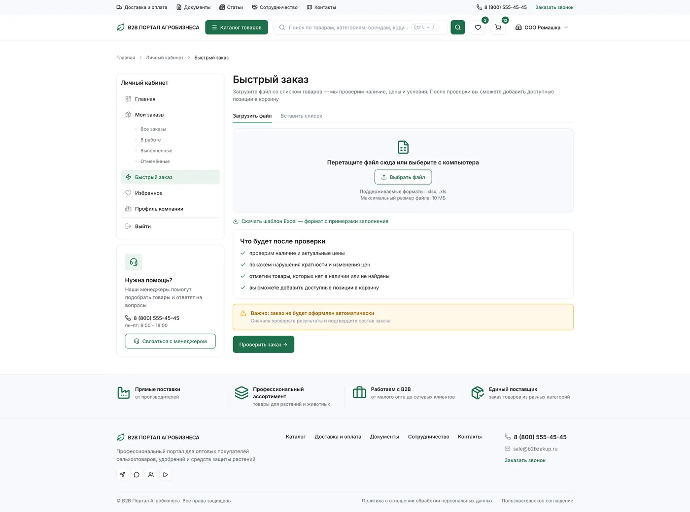
Быстрый заказ, загрузка файла
Первый экран быстрого заказа: две вкладки — файл или список строками. В области загрузки форматы и предельный размер, рядом ссылка на шаблон Excel с примерами. Ниже перечислено, что проверит портал, и предупреждение, что заказ не оформляется автоматически, пока клиент не подтвердит состав.